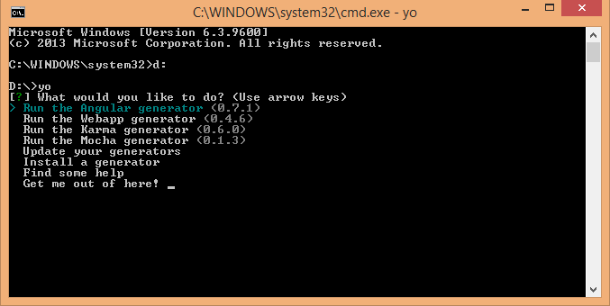

Grunt.js
Front-end işlerinizi hızlandırmanın en basit yolu
Bugün nelerden bahsedilecek;
- Grunt.js Nedir?
- Grunt.js Kurulumu
- Neden Kullanmalıyım?
- Neler yapılabilir?
- Bonus: Daha basit olsun!
Grunt.js Nedir?
- JS Task Runner (Görev Çalıştırıcı?)
- Komut satırında çalışır
- Node.Js ile birlikte kullanılır
- NPM üzerinden birçok plugin mevcut
Grunt.js Kurulumu
Node.js kurulumu yapıldıktan sonra;
npm install -g grunt-cli
veya proje klasörünüzde package.json yaratıp içine;
{
"name": "ProjeIsmi",
"version": "0.1.0",
"devDependencies": {
"grunt": "~0.4.2"
}
}
Sonrasında ise;
npm install
Grunt.js Kurulumu
Package.json ile kurulum sayesinde;
- Proje bazlı kurulmuş olur
- Pluginlerin yönetimi basit olur
- Kısaca derli toplu!
Neden Kullanmalıyım?
En önemlisi Javascript!
module.exports = function(grunt) {
// Project configuration.
grunt.initConfig({
pkg: grunt.file.readJSON('package.json'),
uglify: {
options: {
banner: '/*! <%= pkg.name %> <%= grunt.template.today("yyyy-mm-dd") %> */\n'
},
build: {
src: 'src/<%= pkg.name %>.js',
dest: 'build/<%= pkg.name %>.min.js'
}
}
});
// Load the plugin that provides the "uglify" task.
grunt.loadNpmTasks('grunt-contrib-uglify');
// Default task(s).
grunt.registerTask('default', ['uglify']);
};
Frontend'in python, ant, rake öğrenmesine ne gerek var?
Diğer Güzellikleri
- Kolaylık, Hız, Düzen
- Birçok Plugin
- Open Source
- Büyük Topluluğa Sahip
Neler Yapılabilir?
HERŞEY
Neler Yapılabilir?
- Unit Test
- JS Sıkıştırma
- Imaj Optimizasyon
- SASS, LESS Derleme
- Html'leri Düzenleme
- Versiyonlama
- ...vs.vs.
Burada anlatan arkadaş slide'da gösterilemeyecek canlı testler yapar...
Çünkü Grunt.js clientside bir yapıda değildir...
Bonus
Daha basit olsun!
Yeoman!
http://yeoman.io/Hızlı bir şekilde projelerinizin temelini oluşturun.
Hem de herkesin destek verdiği yapılarda.
Yeoman!
Aslında birnevi üç sistemin birleşimi de diyebiliriz.
- Yo : Projenin iskeletini oluşturmak için
- Bower : Kullandığınız pluginlerin, librarylerin yönetimi için
- Grunt : Projenizi derlemek, göstermek, test etmek için
Yeoman Kurulumu
Gerekli olanlar;
- Node.js
- Git
Bunlar kuruluysa komut satırında tek yapmanız gereken;
npm install -g yo
Yeoman Kullanımı
Sonrasında ise sadece 'yo' komutunu kullanarak çalıştırabilirsiniz.
Devamı bir dahaki sunuma...